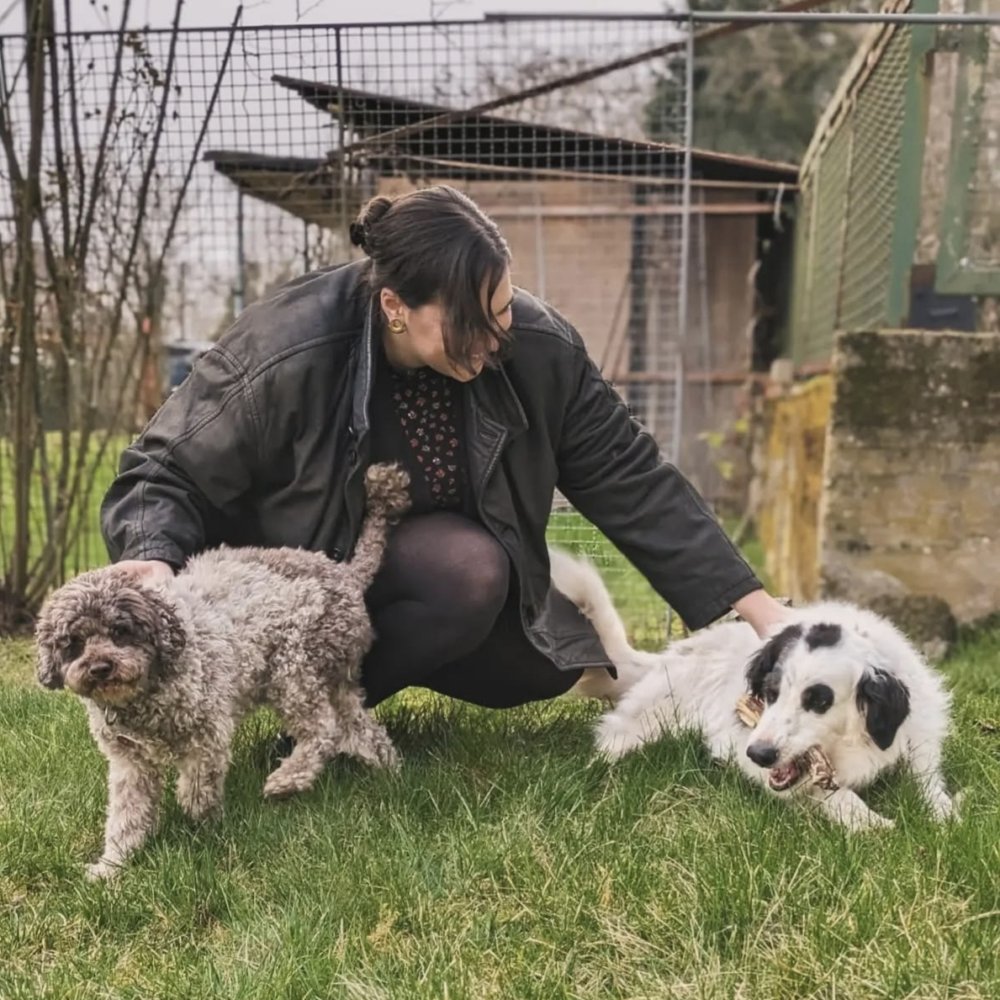
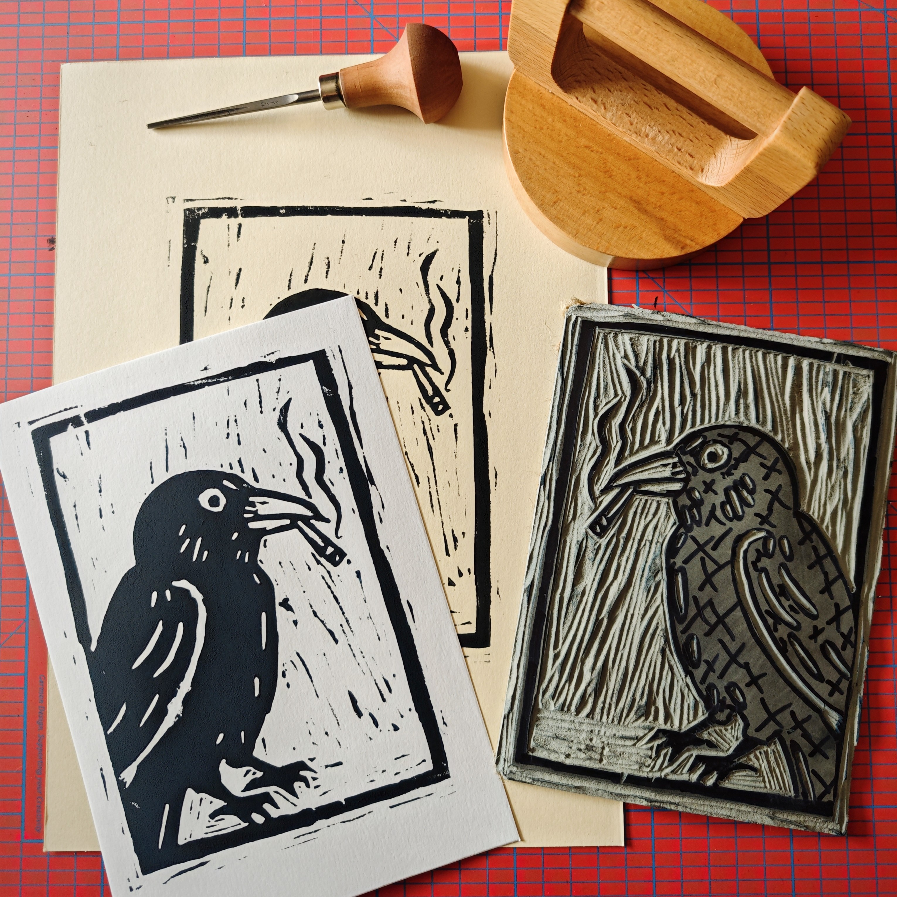
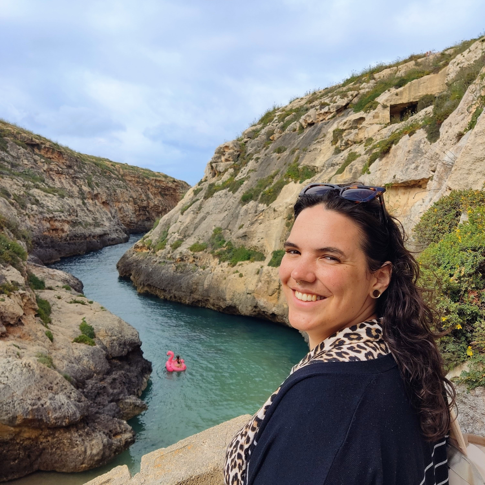

Zuletzt (11/2021 bis 12/2025):
Kommunikationsmanagerin bei EUniWell (Universität zu Köln).
- Rollen-Evolution: Start als Wissenschaftliche Hilfskraft, dann Kommunikationsmanagerin mit Übernahme zusätzlicher Aufgabenbereiche
• 09/2024 bis 05/2025 Interim Head of Communications (Internationale Teamleitung)
• 01/2024 bis 01/2025 Social Media Lead (Strategie & Content).
- Ausbildung: Master of Arts (M.A.) North American Studies
(Universität zu Köln, Abschlussnote 1,4).
- Tech-Stack: TYPO3, WordPress, Adobe CC, MS Office, Basic Coding (HTML/CSS/Javascript).
- Zertifikate: Storytelling, New Work / Agiles Arbeiten, Projektmanagement.
Mein Mindset & Motivation:
- Haltung: Ich verstehe mich als Feministin und blicke intersektional auf die Welt. Mein Studium hat meinen Blick für gesellschaftliche Zusammenhänge geschärft.
- Engagement: Queere Rechte sind mir ein echtes Anliegen. Beim SCHMIT-Z e.V. habe ich gelernt, wie wichtig Sichtbarkeit ist – und wie man sie schafft.
- Tech-Neugier: Ich bin der Typ Mensch, der wissen will, wie es funktioniert. Deshalb der VHS-Kurs in Programmierung. Ich nutze Tools nicht nur, ich denke sie mit.
Und sonst so?
Ich bin sehr tierlieb und gerne draußen unterwegs. Kreativ bin ich beim Töpfern und Linolschnitt tätig. Meine große Reiseliebe kommt aus meinem interkulturellen Interesse – neue Orte und Menschen inspirieren mich.

Outdoor-Liebe 🌲

Kreativ tätig 🎨

Weltentdecker ✈️
Was ich suche:
Köln ist meine Homebase. Aber gute Arbeit macht nicht an der Stadtgrenze halt. Ich suche eine Aufgabe mit Wirkung.
- Das Umfeld: Meine Wurzeln liegen im Non-Profit-Sektor. Aber ich muss dort nicht bleiben. Ein wertebasiertes Unternehmen reizt mich genauso.
- Ort & Modus: Ob Köln, Bonn, Düsseldorf oder die Region – für den richtigen Job bin ich natürlich gerne mobil. Hybrid & Remote sind für mich möglich.
- Die Kultur: Ich suche ein Team, das "New Work" wirklich lebt. Offenheit, Humor und der Wille, Dinge besser zu machen, sind mir wichtiger als starre Hierarchien.
Verfügbarkeit & Rahmenbedingungen:
⏰
Anstellung:
Vollzeit oder Teilzeit ab 30h/Woche
✈️
Reisebereitschaft:
Gelegentliche Dienstreisen kein Problem